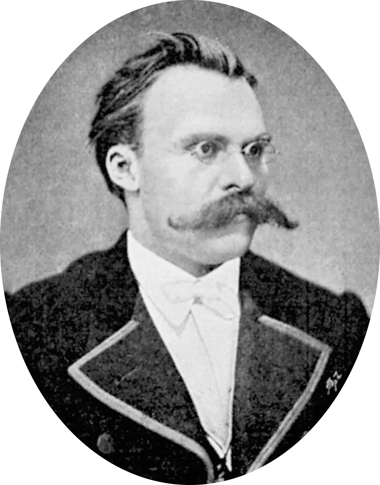

OWAN
Everyday learning
Home
blog
Home
blog
Intro to Variational AutoEncoder
Read More
Aug 26, 2024

Nietzsche: The Genealogy of Morals
Read More
Aug 26, 2024
Website Templates
created with
Website Builder Software
.